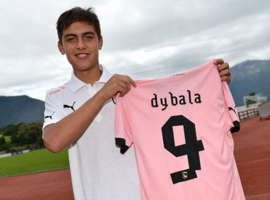
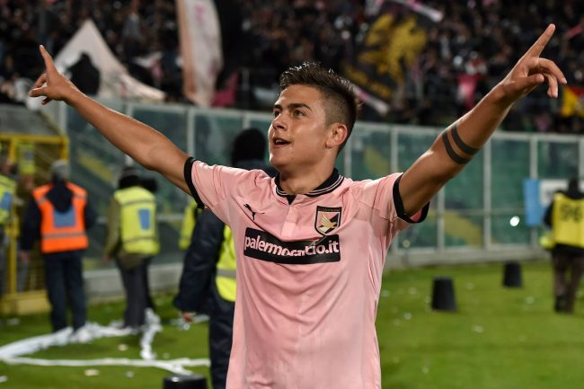

Dybala: Arrivo in Italia
|  |  |
L'arrivo di Paulo Dybala in Italia Nel mese di maggio del 2012 l'argentino sostiene le visite mediche, per poi sottoscrivere con il Palermo un contratto della durata di quattro anni per 500mila euro all'anno. Ad agosto, tuttavia, un contrattempo rischia di far saltare l'affare: l'Instituto, infatti, si rifiuta di concedere il transfer del giocatore fino a quando non verrà saldato un debito di più di tre milioni di euro. Dopo qualche giorno, tuttavia, la situazione ritorna a posto. Paulo Dybala, così, debutta nel campionato italiano durante Lazio-Palermo, match della seconda giornata della stagione 2012/13, entrando in campo al posto di Fabrizio Miccoli. L'esordio da titolare risale all'ottavo turno di campionato, disputato contro il Torino. Mentre il primo gol arriva l'11 novembre, contro la Sampdoria. Il Palermo, tuttavia, alla fine del campionato retrocede in serie B. Dybala chiude con un bilancio di tre gol in ventisette partite di A. Dalla Serie B alla Serie A e la fascia di capitano Nella stagione successiva l'argentino segna la prima rete in serie B solo a marzo: il campionato dei siciliani si chiude con l'immediato ritorno in serie A, ottenuto con ben cinque giornate di anticipo. Dybala, invece, conclude con cinque reti e ventotto presenze in campionato. Nella stagione 2014/2015 egli contribuisce al successo dei rosanero in casa del Milan con una rete, segnando anche contro il Genoa, contro il Parma, contro il Torino e contro il Cagliari. Alla fine del 2014 il C.t. della nazionale azzurra Antonio Conte gli propone la possibilità di essere convocato con la maglia azzurra (le sue origini italiane lo permetterebbero). Tuttavia Dybala rifiuta, preferendo attendere una convocazione da parte del suo paese natale. Non potrei difendere i colori di un altro Paese come se fossero i miei, preferisco aspettare una chiamata dell'Argentina. [...] Ne ho parlato con la mia famiglia e con i miei amici e sono arrivato alla conclusione che ho una carriera davanti, per cui aspetterò quello che voglio da una vita: vestire la maglia celeste e bianca. Il 2 maggio del 2015 indossa per la prima volta la fascia di capitano, nel pareggio per zero a zero contro il Sassuolo: al termine della stagione, lascia il Palermo per trasferirsi alla Juventus.